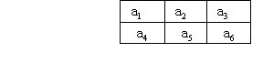

习题五解答
1.偶数至多有48个。
2.提示：先按规律写出一些数来，再找其奇、偶性的排列规律，便可得到答案：不会依次出现1、9、8、8这四个数。
3.设四个连续奇数是2n＋1，2n＋3，2n＋5，2n＋7，n为整数，则它们的和是
（2n+1）＋（2n＋3）＋（2n＋5）+（2n＋7）
＝2n×4＋16＝8n+16=8（n+2）。
所以，四个连续奇数的和是8的倍数。
4.证明：设填入数分别为a1、a2、a3、a4、a5、a6.有

假设要证明的结论不成立，则有：
∵偶数≠奇数，∴假设不成立，命题得证。
5.应选择（B）.参考例3。
6.是偶数.参考例3。
7.不能.因为5个奇数的和为奇数，不可能等于20。
8.能.例如
第一次 78910
第二次 3456
第三次 2345
第四次 13 45
9.这种交换方法是不可行的.参考例12。
10.利用黑白相间染色方法可以证明：不可能剪成由7个相邻两个方格组成的长方形，因为图形中一种颜色有8格，另一种颜色有6格，而每个相邻两个方格组成的长方形是一黑格一白格，7个这样的长方形共7黑格7白格.与图形相矛盾.